Composition assembled from new SVG files. Illustrative only: collision/layout/FX and final aesthetic approval are NOT VERIFIED. Current live game still uses ART V3.
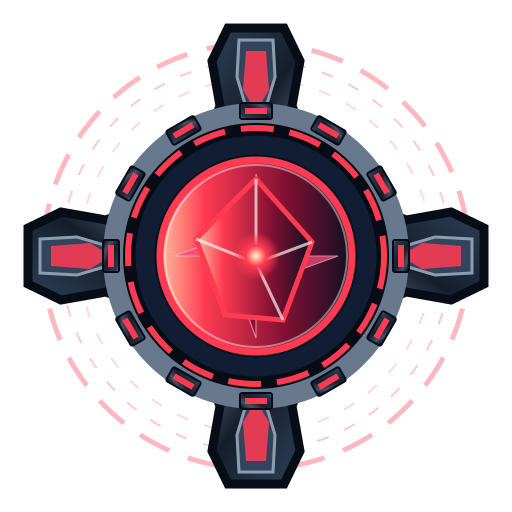
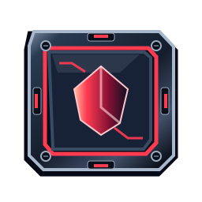
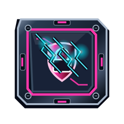
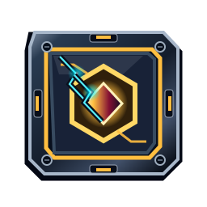
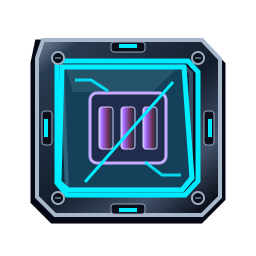
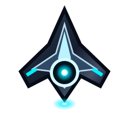
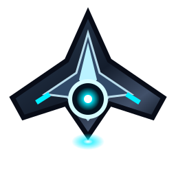
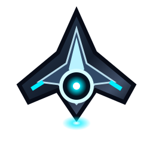
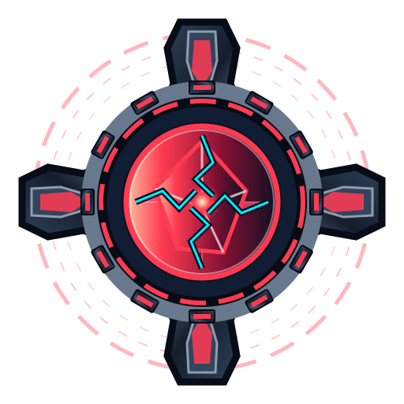
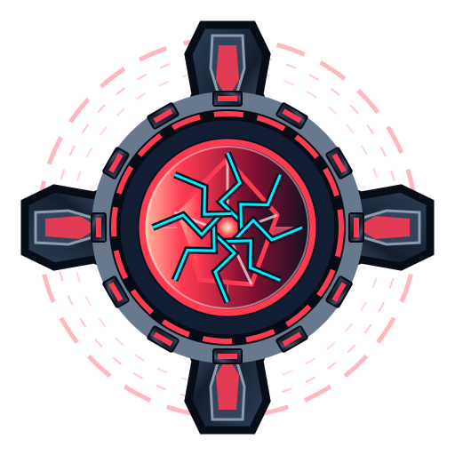
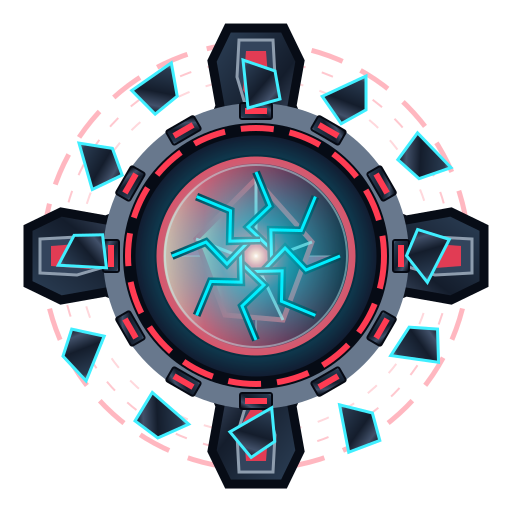
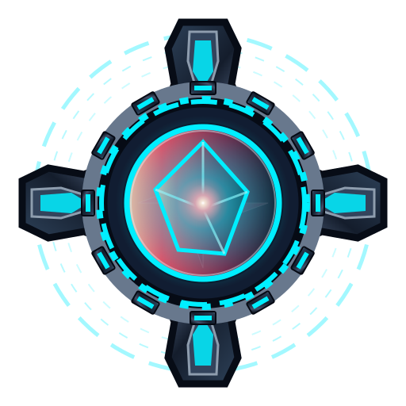
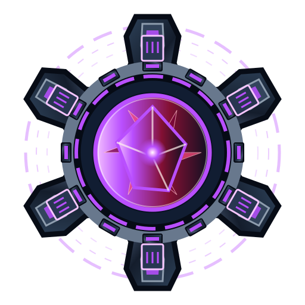
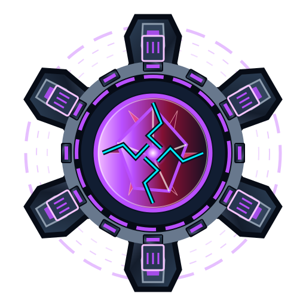
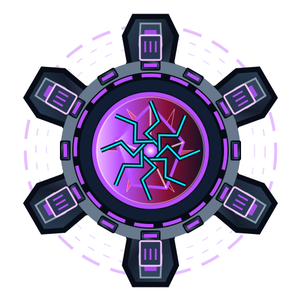
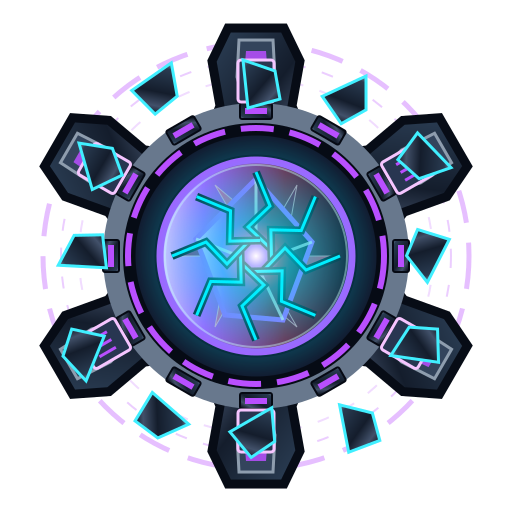
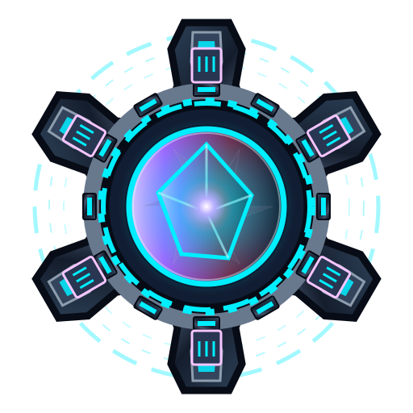
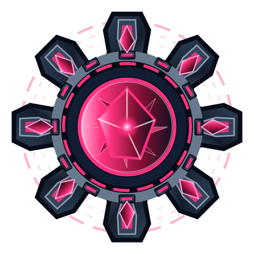
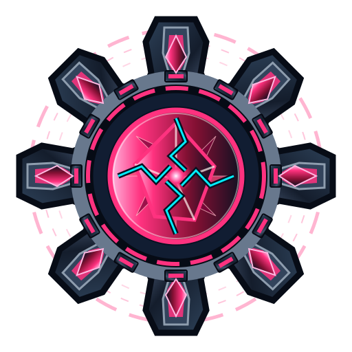
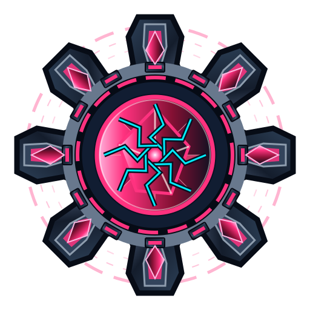
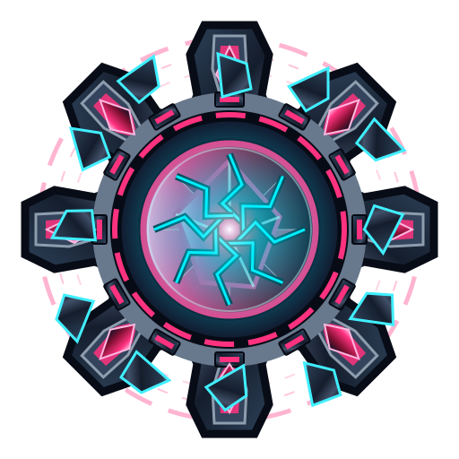
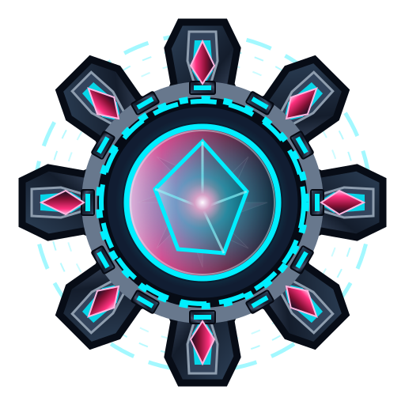
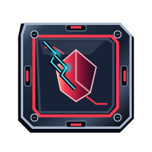
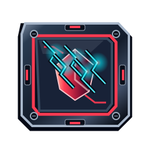
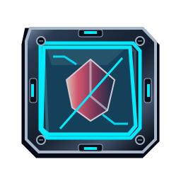
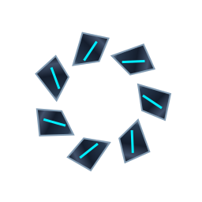
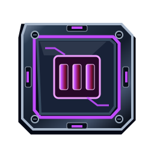
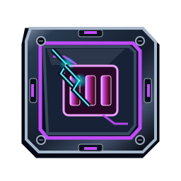
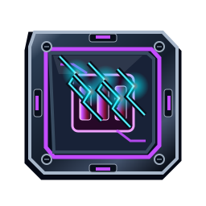
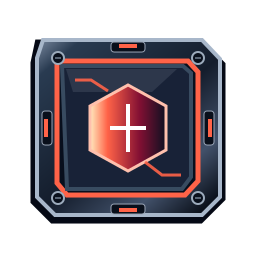
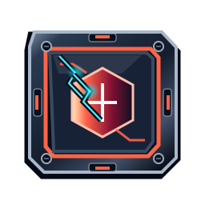
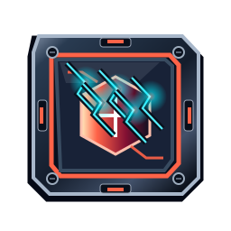
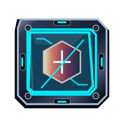
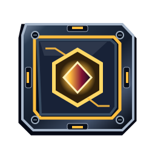
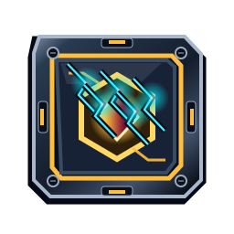
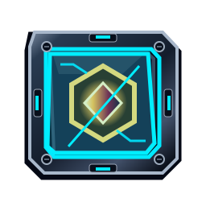
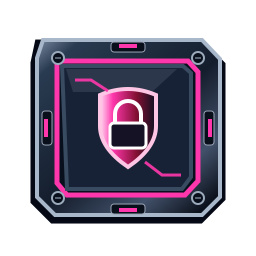
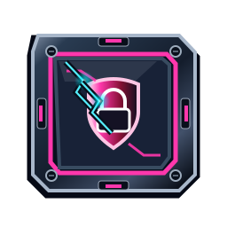
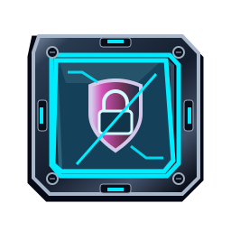